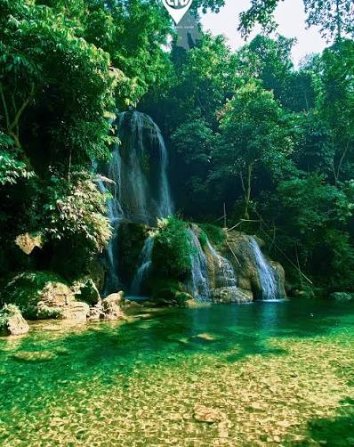
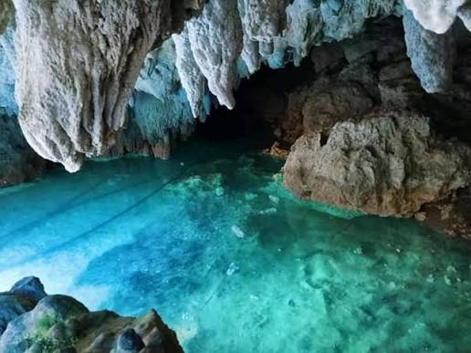
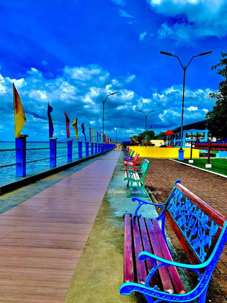
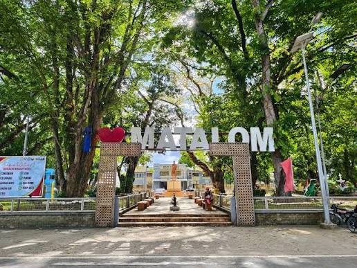
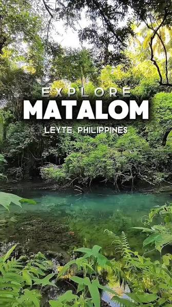

Explore the beautiful beaches, historical landmarks, mountains, and natural attractions of Matalom.
Explore Tourist SpotsDiscover some of the amazing destinations in Matalom.
Canigao Island is Matalom's most popular tourist destination, known for its white sand beaches, clear blue waters, and rich marine life. Visitors can enjoy swimming, snorkeling, and camping.

Also known as Mahayahay Falls, this refreshing waterfall is located in Barangay Elivado. Visitors can enjoy a scenic outdoor adventure involving a local ride and a river trek.

Hitoog Cave is a natural attraction in Matalom that offers visitors an opportunity to explore the municipality's unique landscapes and natural surroundings.

Matahum Bay View is a coastal recreation and viewing area where visitors can relax while enjoying scenic views of the bay and the surrounding coastal landscape.

The town proper and plaza showcase local culture and landmarks, including St. Joseph Parish Church, which features classic Spanish-colonial style architecture.

Matalom is a beautiful municipality in the province of Leyte, Philippines. It is known for its natural beauty, peaceful coastal areas, and welcoming community.
Visitors can enjoy beautiful beaches, islands, waterfalls, caves, scenic views, and other natural attractions. Matalom offers exciting experiences for travelers, nature lovers, and adventure seekers.
This website was created to showcase some of the tourist destinations and attractions that visitors can explore and enjoy in Matalom.
A glimpse of the beautiful tourist destinations in Matalom.
Send us a message for more information.